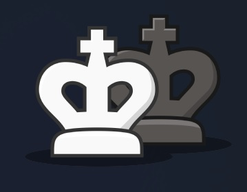
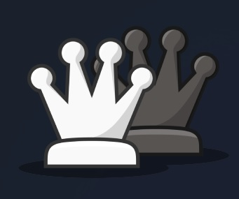
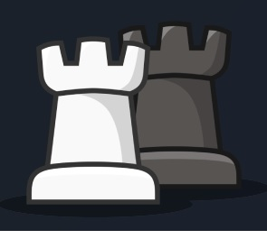
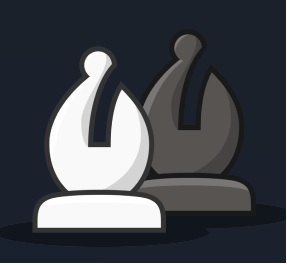
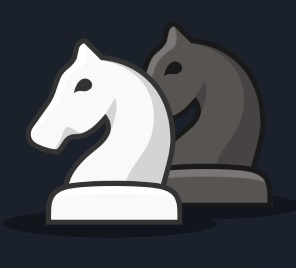
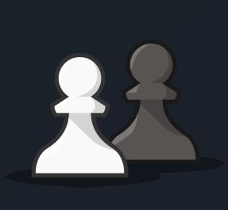
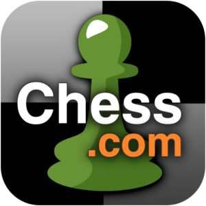
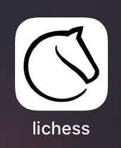
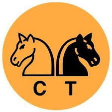
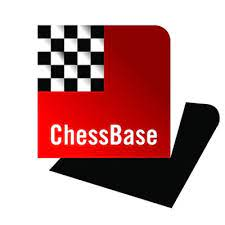

Краткое описание нашего сайта
-
История игры
В этом разделе мы углубимся в прошлое шахмат, расскажем о их древних корнях и эволюции в течении многих столетий. Изучите, как шахматы стали не только игрой, но и искусством, вдохновляющим множество людей по всему миру.
-
Правила игры
Основы шахмат лежат в их правилах. Здесь вы найдете подробное описание основных правил и нюансов шахматной игры. От начальных позиций фигур до спецификаций взятия на проходе, мы предоставим вам всю необходимую информацию для успешной игры.
-
Полезные ссылки
Этот раздел собирает для вас полезные ресурсы и материалы, которые помогут улучшить ваши шахматные навыки. Вас ждут книги, программы для анализа партий, онлайн-курсы и другие ресурсы, которые могут сделать вас более сильным шахматистом.
-
Чемпионы мира
Познакомьтесь с великими игроками, которые завоевывали звание чемпиона мира в истории шахмат. Их партии и истории вдохновляют и показывают выдающееся мастерство, достигнутое в этой игре.
-
Топ-100 игроков
Следите за текущими рейтингами и узнайте, кто из шахматистов занимает вершину мирового списка лучших. Этот раздел предоставляет вам актуальную информацию о топ-100 шахматистов, а также их статистику и достижения.
История шахмат
– это захватывающий путь через века, который начался в древние времена и привел к формированию игры, которую мы знаем сегодня. Древние корни: Шахматы имеют свои корни в Индии, где они возникли примерно в 6-7 веках нашей эры. Исходными предками шахмат были индийские чатуранга, их предшественники. Эти ранние формы шахмат были несколько отличными от современных правил, но уже включали основные элементы, такие как король, ферзь и пешки. Влияние и распространение: В древние времена шахматы быстро распространились в другие части мира. Они стали популярными в Персии, где получили свое название "шахматы" (от персидского "шах" - король), и оттуда попали в арабский мир. Арабские ученые важно внесли свой вклад в развитие и запись правил шахмат. Европейский след: Шахматы добрались до Европы в средние века и стали любимой игрой европейских королей и аристократии. Здесь игра приобрела более современные правила, включая ход королевы и расширение возможностей пешек. Развитие стратегии и теории: С развитием шахмат в новое время началась систематическая разработка стратегии и открытие новых шахматных тактик. Легендарные мастера, такие как Эмануэль Ласкер и Гарри Каспаров, внесли свой вклад в развитие шахматной теории и показали, насколько сложной и глубокой может быть эта игра. Современность: Сегодня шахматы - это мировой феномен, с миллионами поклонников и активных игроков во всех уголках планеты. Чемпионаты мира, онлайн-платформы и образовательные ресурсы делают эту игру доступной и увлекательной для всех, кто желает войти в увлекательный мир 64 клеток.
Вот основные правила шахмат:
Шахматы - это древняя и стратегическая настольная игра для двух игроков, которая играется на игровой доске, состоящей из 64 квадратных клеток, расположенных на 8x8 сетке. Цель игры - поставить короля противника под шах и мат, что означает, что король находится под нападением и не может сделать никакого хода для его спасения.
-
Фигуры:
В шахматах есть шесть разных типов фигур: король, ферзь, ладья, слон, конь и пешка. Каждая
фигура имеет свои
уникальные ходы и возможности.
-
Король
Ценность - король, хотя и является наиболее важной фигурой, не имеет точной численной ценности.
-
Ферзь
Ферзь оценивается в 9 пешек
-
Ладья
Ценность ладьи составляет 5 пешек
-
Слон
Ценность слона равна ценности коня или же 3 пешки
-
Конь
Ценность коня равна ценности слона или же 3 пешки
-
Пешка
Пешка имеет наименьшее значение в шахматах, с помощью нее оценивается сила других фигур
-
-
Цель игры:
Основная цель игры - достичь шаха и мат.
-
Ходы фигур:
Король может ходить на одну клетку в любом направлении. Ферзь может двигаться по вертикали, горизонтали и диагонали на любое число клеток. Ладья двигается по вертикали и горизонтали на любое число клеток. Слон двигается по диагонали на любое число клеток. Конь делает ход в форме буквы "L" и может прыгать через другие фигуры. Пешка двигается вперед на одну клетку, но делает первый ход может двигаться на две клетки. Пешка атакует по диагонали. Рокировка: Это специальный ход, который позволяет королю и ладье сделать ход одновременно. Она имеет правила, которые должны выполняться для выполнения рокировки.
-
Взятие на проходе:
Пешка, двигающаяся на две клетки из начальной позиции, может быть взята на проходе противником.
- Превращение пешки:
Если пешка достигает последней горизонтали доски противника, она может быть заменена другой фигурой, обычно ферзем.
- Шах и мат:
Если король оказывается под нападением (шахом), игрок должен защитить его. Если не существует легального хода для короля, который бы избавил его от шаха, это означает "мат", и игра заканчивается.
-
Пат:
Если король не находится под шахом, но не имеет ни одного легального хода, это означает "пат", и игра заканчивается ничьей.
- Результат игры:
Игра может закончиться победой одного из игроков (матом), ничьей (патом), или оговоренной ничьей (например, в случае недостатка материала для матирования).
Это базовые правила шахмат, и в игре есть еще много деталей и стратегий. Шахматы - это игра глубокой стратегии и тактики, требующая многих игр для достижения мастерства.
5 самых полезных сайтов для шахматистов
-
chess.com
Chess.com - это популярный веб-сайт и приложение, предоставляющее множество ресурсов для шахматистов, включая онлайн-игры, учебные материалы и сообщество игроков.
-
lichess.org
Lichess - это бесплатный и открытый источник для шахматистов. Здесь вы можете играть в шахматы онлайн, изучать открытые партии, принимать участие в турнирах и многое другое.
-
ChessTempo
ChessTempo предлагает широкий спектр учебных материалов, включая тактику, стратегию и открытые партии.
-
The Week in Chess (TWIC)
The Week in Chess (TWIC): Это еженедельная публикация, содержащая последние новости и открытые партии из мира шахмат. Это отличный способ оставаться в курсе событий.
-
ChessBase
ChessBase предоставляет базу данных партий, программное обеспечение для анализа, обучающие материалы и многое другое.
Чемпионы мира по шахматам
- Вильгельм Штейниц (1894-1921) - официальный чемпион мира.
- Эмануэль Ласкер (1894-1921, 1921-1927) - первый официальный чемпион мира, который удерживал титул.
- Хосе Рауль Капабланка (1921—1927)
- Александр Алехин (1927-1935, 1937-1946) - второй официальный чемпион мира и первый, кто удержал титул после потери его.
- Макс Эйве (1935-1937) - временно удерживал титул после выигрыша турнира.
- Михаил Ботвинник (1948-1957, 1958-1960, 1961-1963) - первый официальный чемпион мира после Второй мировой войны.
- Василий Смыслов (1957-1958)
- Михаил Таль (1960-1961) - первый и единственный чемпион мира, который выиграл титул у Михаила Ботвинника.
- Тигран Петросян (1963-1969) - бывший чемпион мира, вернувший титул у Ботвинника.
- Борис Спасский (1969-1972) - победил Тиграна Петросяна.
- Роберт Фишер (1972-1975) - знаменитый матч против Бориса Спасского.
- Анатолий Карпов (1975-1985) - третий официальный чемпион мира.
- Гарри Каспаров (1985-2000) - пятый чемпион мира, который долго удерживал титул.
- Владимир Крамник (2000-2007) - выиграл у Гарри Каспарова.
- Вишванатан Ананд (2007-2013) - первый чемпион мира из Индии.
- Магнус Карлсен (2013-настоящее время) - текущий чемпион мира, норвежский гроссмейстер.
Рейтинг топ-100 лучших шахматистов среди женщин и мужчин
Список топ-100 шахматистов - это рейтинг лучших шахматистов в мире, который составляется и обновляется регулярно. Этот список представляет собой иерархию среди профессиональных игроков, отражая их текущую спортивную форму и результаты. В топ-100 шахматном рейтинге включены шахматисты из разных стран и различных возрастов. Соревнования и турниры проходят по всему миру, и участники зарабатывают баллы, в зависимости от результатов своих партий. Чемпионаты, международные соревнования и турниры с высокими призами обычно приносят больше баллов, чем меньшие мероприятия. Рейтинг ФИДЕ (Международной шахматной федерации) является одним из самых авторитетных и известных шахматных рейтингов в мире. Он позволяет шахматистам и шахматным организациям отслеживать успехи игроков и определять их место в мировой иерархии. Топ-100 шахматистов включает в себя как гроссмейстеров, так и молодых талантов, которые стремятся подняться вверх по рейтинговой лестнице и стать лучшими в мире. Этот список всегда изменяется, так как результаты турниров обновляются, и новые игроки могут подняться в рейтинге, а старые могут уступить свои позиции.